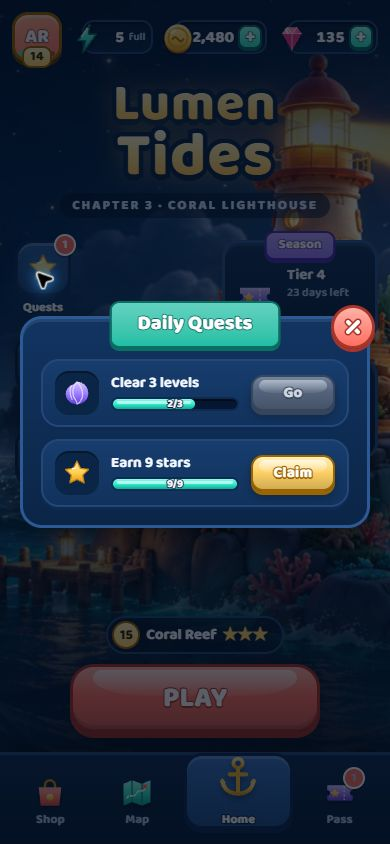

01 / СЛОМАННАЯ ИЕРАРХИЯ Исправлено и проверено
Кнопка забирала место у смысла
Наблюдение. В окне Daily Quests кнопка растягивалась почти на всю строку. Названия «Clear 3 levels» и «Earn 9 stars» разбивались на узкие столбцы: действие видно, а задача плохо читается.
- Открыть Home → Quests на ширине 390 px.
- Сравнить ширину текста, прогресса и действия.
- Повторить после исправления правила ширины кнопки.
Решение. Ограничить CTA, запретить ему растягиваться и отдать оставшееся место содержанию. Кнопка — последний элемент строки, а не её главный заголовок.
Повторная проверка
В опубликованной сборке кнопка занимает около 84 px, текстовая область — около 126 px. Обе задачи читаются, прогресс остаётся рядом с названием. Закрытое окно старта больше не выглядывает из-под экрана.
